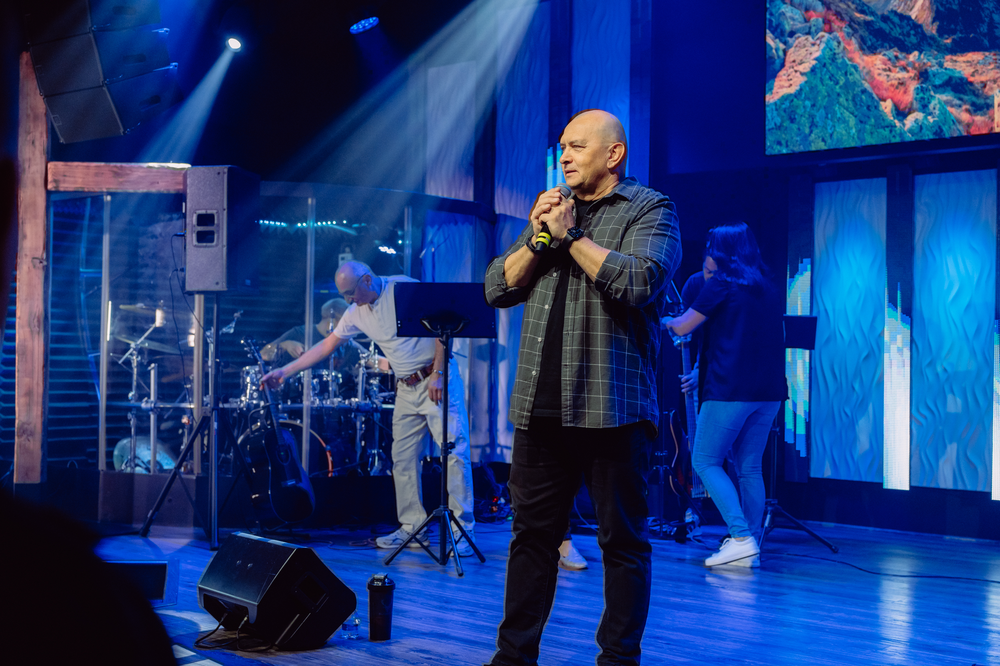
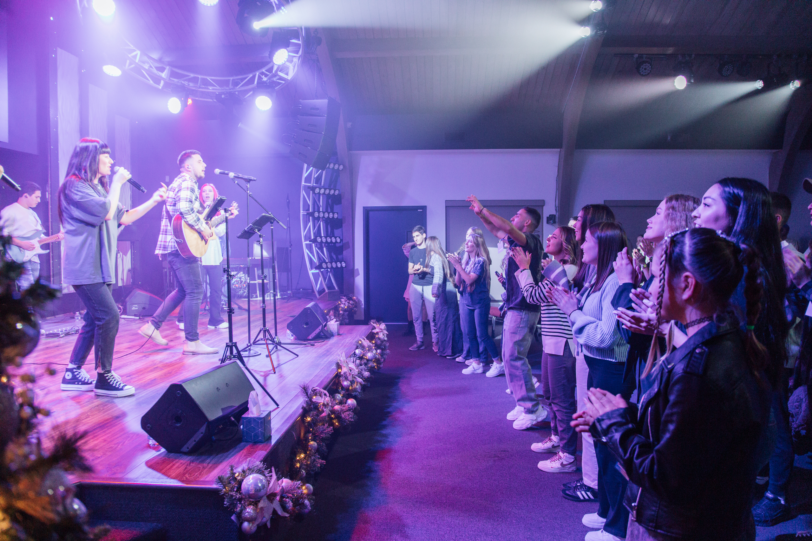

Возраст 0–12
KidsZone
Безопасное и радостное место, где дети узнают Иисуса, находят друзей и растут в вере рядом с церковной семьёй.
Подробнее →Возрастаем вместе. Служим вместе. Следуем за Христом вместе.
Безопасное и радостное место, где дети узнают Иисуса, находят друзей и растут в вере рядом с церковной семьёй.
Подробнее →Место для подростков и молодых людей, где можно дружить, задавать вопросы о вере и расти вместе во Христе.
Подробнее →Тёплое общение для женщин: дружба, молитва, поддержка и духовный рост под руководством пастора Марины Малько.
Подробнее →Мы верим в силу молитвы и регулярно молимся друг за друга, за нужды людей, за город и за весь мир.
Попросить о молитве →Домашние группы помогают строить настоящие отношения, вместе изучать Библию, молиться и поддерживать друг друга в повседневной жизни.
Найти группу →Служение поклонения служит церкви через музыку и поклонение.
Участвовать →KidsZone — служение для детей от 0 до 12 лет. Мы хотим, чтобы каждый ребёнок чувствовал заботу, безопасность и любовь Иисуса.
Дети знакомятся с Библией в понятной форме, участвуют в играх и творчестве, находят друзей и растут вместе с церковной семьёй. KidsZone проходит в связи с воскресным собранием церкви.
Если вы приходите с детьми впервые, напишите нам заранее — с радостью ответим на вопросы и поможем подготовиться к визиту.
Спросить о KidsZone →

Молодёжное служение CLA — для подростков и молодых людей 13–25 лет. Здесь можно быть собой, находить настоящую дружбу и искать ответы о вере без давления.
Мы хотим, чтобы следующее поколение росло в отношениях с Иисусом, училось полагаться на Бога и находило своё место в общине.
Если вы хотите узнать больше или прийти впервые, напишите нам — будем рады познакомиться.
Связаться с молодёжью →Женское служение CLA ведёт пастор Марина Малько. Это пространство для женщин, которым важны дружба, молитва, поддержка и искренние разговоры о жизни с Богом.
Мы стремимся ободрять друг друга, возрастать в Писании и помогать каждой женщине чувствовать себя принятой в церковной семье.
Если вы хотите присоединиться или узнать о ближайших возможностях для женщин, напишите нам.
Связаться с женским служением →

Домашние группы помогают строить настоящие отношения, вместе изучать Библию, молиться и поддерживать друг друга в повседневной жизни.
Свяжитесь с нами, если у вас есть вопросы о домашних группах.
Найти группу →Бог наделил каждого человека дарами. Независимо от того, служите ли вы людям, детям, в поклонении, медиа или за кулисами — для вас всегда найдется место в служении.